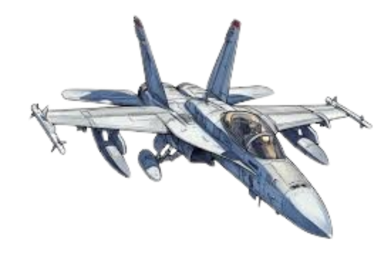

F/A-18 Super Hornet

Primary function: Multirole fighter/attack aircraft
Contractor: Boeing
Power plant: Two General Electric F414-GE-400 turbofan engines
Thrust: 22,000 pounds (97.9 kN) each with afterburner
Length: 60.3 feet (18.5 meters)
Wingspan: 44.9 feet (13.62 meters) with missiles
Height: 16 feet (4.88 meters)
Maximum takeoff weight: ~66,000 pounds (29,937 kilograms)
Speed: Mach 1.8 (approx. 1,190 mph, 1,915 km/h at altitude)
Range: 1,275 nautical miles (2,346 kilometers) with external tanks
Combat radius: ~390 nautical miles (722 km) interdiction mission
Ceiling: 50,000 feet (15,000 meters)
Armament:
• One M61A2 20mm Vulcan cannon (570 rounds)
• Up to 11 weapon stations for AIM-9 Sidewinder, AIM-120 AMRAAM, Harpoon, JDAM, laser-guided bombs, etc.
Crew:
• F/A-18E: single-seat
• F/A-18F: two-seat
Unit cost (approx): $66–70 million (varies by block/upgrade)
Initial operating capability: 1999 (U.S. Navy)
Inventory: Over 600 in U.S. Navy service; also exported (Australia, Kuwait, others)